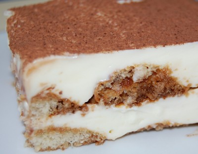
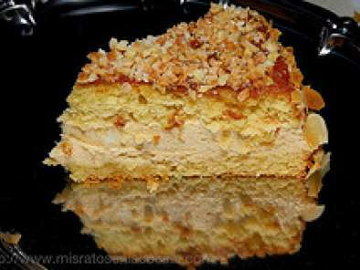

33 Recetas de Tartas - Recetas de Escándalo
 Menu Inicio Recetas de Cocina Aperitivos, tapas y pinchos Carnes y aves Pescados y mariscos Sopas y cremas Salsas y guarniciones Arroces Ensaladas Verduras Huevos y tortillas Legumbres Masas Pasta Bocadillos y sandwiches Postres y repostería Bizcochos Cremas, coberturas y rellenos Dulces Tradicionales Galletas Magdalenas, Cupcakes y Muffins Postres con fruta Postres de cuchara Tartas Tortitas y crepes Bebidas Zumos y Refrescos Naturales Batidos Leches Vegetales Smoothies Cócteles y Bebidas Alcohólicas Gastronomía Eventos Recetas de Verano Desayunos Recetas de Navidad Recetas con Thermomix Vídeos Libros Colaboraciones Contacto
Recetas de Tartas
» Postres y repostería Tartas Tenemos 33 recetas de TartasReceta de crumble de manzana o apple crisp, un postre fantástico
| 12 | 60 minExisten infinidad de postres con manzana y, como junto con el chocolate y el hojaldre es de mis ingredientes preferidos para la repostería, no me canso de preparar dulces de todo tipo con las manzanas como protagonistas. Ya simplemente comer una manzana sin más es todo un placer, y en la repostería su aroma, su
Seguir leyendoTarta de manzana en Thermomix con hojaldre y crema pastelera
| 2 uds | 60 minSi tuviera que elegir mis ingredientes favoritos para preparar postres, lo tengo clarísimo: chocolate, manzana y hojaldre. Por eso, hay recetas como ésta que unen varios de ellos, en este caso la manzana y el hojaldre, y eso hace que se convierta en una de mis tartas favoritas, que además es muy muy fácil de preparar
Seguir leyendoTarta de manzana casera, fácil, rápida y muy rica
| 12 | 60 minExisten un montón de versiones de tartas de manzana y a cual más rica. Hay ocasiones en las que me encanta pasarme horas en la cocina y elaborar postres que lleven bastante elaboración, pero la mayoría de las veces quiero preparar algo rápido y sabroso, sin mucha complicación. Esta tarta de manzana casera, fácil, rápida
Seguir leyendoTarta tres chocolates con Thermomix, facilísima y con un resultado de 10
| 12 | 60 minHay infinidad de postres que se elaboran con chocolate, uno de los grandes reyes de la repostería porque suele gustarle a prácticamente todo el mundo y se adapta con mucha facilidad a todo tipo de preparaciones. Eso si, si unimos el atractivo del chocolate con una preparación de lo más sencilla, estamos ante un postre
Seguir leyendoTarta de queso fría y sin horno con Thermomix, ¡súper sabrosa y rápida!
| 12 | 260 minParecen infinitas las versiones que se pueden hacer de un postre como la tarta de queso. Hay de todos los tipos y para todos los gustos, con diferentes ingredientes, texturas, sabores, bases, coberturas Y esta es mi preferida de las frías, ya que las horneadas también me gustan muchísimo, pero cuando el calor aprieta nada
Seguir leyendoTarta de turrón blando sin horno y con cuajada. Receta de postre navideño
| 12 | 45 minNo se si os pasa como a mi pero hay ciertos sabores que nunca me han parecido atractivos y ha sido con los años que les he ido cogiendo el gustillo. Eso me ha pasado hace muy poco con el turrón blando, es lo que yo llamo un «sabor adulto» y es que nunca antes
Seguir leyendoPastel o tarta de calabaza. Receta de la famosa pumpkin pie americana
| 12 | 120 minYo, que siempre he sido muy de salado, descubrí hace años lo maravilloso que es preparar los dulces y postres en casa ya que puedes adaptar los sabores y texturas a tu gusto, darles el punto de dulzor que más te guste y sobre todo controlar los ingredientes que llevan y su calidad. Unido a
Seguir leyendoTarta de queso La Viña, la receta auténtica. ¡Deliciosa!
| 12 | 60 minYa simplemente escuchar o pensar en la palabra «queso» me hace salivar, y es que es uno de mis ingredientes preferidos tanto para comer tal cual como para utilizar en la cocina, ya sea para recetas saladas y por supuesto también en las dulces. De hecho, mi postre favorito es la tarta de queso, ya
Seguir leyendoTarta de limón y queso fría. Receta muy fácil y sin horno
| 12 | 45 minLos limones son un ingrediente fundamental en nuestra gastronomía ya que están presentes en muchas recetas tradicionales y su zumo se utiliza como aliño de muchos platos (sobre todo en Murcia, doy fe de ello). Pero también es el protagonista indiscutible de muchas recetas de repostería ya que es uno de los aromatizantes más utilizados
Seguir leyendoReceta de tarta de queso fría (sin horno) con higos frescos
| 12 | 285 minTodo lo que lleve queso me encanta, ya sea en preparaciones saladas como en las dulces. Precisamente es el protagonista de mi postre favorito, la tarta de queso, que para mi rivaliza con el chocolate aunque le gana un poquito porque no hay sitio al que vaya en el que no pida tarta de queso
Seguir leyendoTarta de zanahoria o carrot cake. Receta de pastel de zanahoria irresistible
| 12 | 90 minCada vez me gusta más preparar postres de forma casera (aunque no lo parezca, hasta tener el blog apenas me había atrevido a preparar unos poquitos), y es que es increíble la libertad para poder adecuar las recetas a tu gusto, controlar la cantidad de azúcares, aromatizarlas como prefieras Esta tarta de zanahoria o carrot
Seguir leyendoTarta Red Velvet americana. Receta paso a paso
| 12 | 120 minNunca me han gustado demasiado las tartas con bizcochos, quizás porque en muchas ocasiones se sirven en restaurantes y confiterías con bizcochos de lo más simplones en cuanto a sabor y textura, en definitiva sin nada que aportar. Sin embargo, hay tartas que elevan el concepto de bizcocho hasta un nivel único, como ocurre con
Seguir leyendoTarta de Santiago casera. Receta tradicional gallega
| 12 | 60 minTenemos la gran suerte de contar con una variedad increíble de postres y dulces tradicionales. Eso si, todos ellos cuentan como base con ingredientes básicos y la mayoría se preparan de forma muy sencilla, dando lugar a sabores, texturas y presentaciones muy diferentes pero siempre riquísimos. Esta de Tarta de Santiago casera es una receta
Seguir leyendoTarta de tres chocolates paso a paso. ¡Receta muy fácil!
| 12 | 60 minSon incontables la cantidad de postres y tartas que se elaboran con chocolate, sin duda es un ingrediente de lo más versátil y que gusta tantísimo que la imaginación parece no tener límites cuando se trata de utilizarlo. Eso si, las recetas que más éxito tienen son en las que se combina el adictivo poder
Seguir leyendoTarta de queso y yogur al horno con manzana y masa quebrada
| 12 | 60 minSi hay que pensar en un postre que haya sido versionado de mil formas diferentes es sin duda la tarta de queso. Horneadas, sin hornos, con distintas bases, texturas y acompañamientos de todo tipo, siempre que esté bien hecha y estructurada es un manjar, a mi personalmente me gustan de todos los tipos y por
Seguir leyendoTarta de hojaldre y crema pastelera con kaki Persimon®
| 4 uds | 60 minEntre mis ingredientes preferidos para los postres, uno de los que más me gusta es el hojaldre, ya que queda genial con multitud de ingredientes. Si a eso sumamos que una de mis frutas preferidas es el kaki Persimon, adivinaréis que esta receta me encanta. Estas tartas de hojaldre y crema pastelera con kaki Persimon
Seguir leyendoTarta de galletas y chocolate sin horno. La más fácil y con potente sabor a chocolate
| 8 | 30 minQuienes somos muy de chocolate tenemos la gran suerte de contar con una variedad infinita de recetas preparaciones con este deseado ingredientes y a cual más rica. Hay para todos los gustos y un poco más abajo vas a comprobar la cantidad de recetas que ya tenemos en el blog con chocolate aunque de vez
Seguir leyendoTarta de turrón de chocolate y queso. Receta muy fácil y sin horno
| 12 | 160 minMe encanta el chocolate en todas sus formas y hace ya varios años que preparo por Navidad mi propio turrón de chocolate casero porque creo que es una de las recetas más fáciles y rápidas que se pueden encontrar en el blog y queda riquísimo. De ahí que me inspirara para crear un postre a
Seguir leyendoTarta Guinness de cerveza negra y chocolate con cobertura de queso
| 12 | 80 minMe encanta el juego que da la repostería porque se pueden realizar casi infinitas combinaciones con los ingredientes más básicos, pero además admite otros ingredientes que jamás te los imaginarías en un postre y que le dan un toque espectacular, como es el caso de la cerveza. Esta Tarta Guinness de cerveza negra y chocolate
Seguir leyendoTarta de piña y yogur fría sin horno. Receta fácil
| 12 | 45 minHay muchas razones para querer preparar postres que no necesiten horno, aunque debo reconocer que las elaboraciones que requieren horno suelen ser de mis preferidas. Pero durante los meses más calurosos o cuando no queremos echar demasiado tiempo en la cocina y preparar algún buen postre, las opciones frías son las más socorridas. Esta tarta
Seguir leyendo 1 2 →
Buscar recetas
¿Quiénes somos?
Somos Natalia y Manuel y nos encanta la gastronomía y el mundo online. ¡Conócenos más!
¡Suscríbete!
Recibe semanalmente en tu correo las últimas recetas publicadas en Recetas de ¡Escándalo!
¡Suscribirme!Recetas Más Populares
Bizcocho de naranja esponjoso, casero y fácil Tartar de atún rojo y aguacate, una receta exquisita Cómo hacer magdalenas caseras y esponjosas. Receta tradicional Fabada asturiana, la receta tradicional y auténtica Bizcocho de yogur natural muy esponjoso Entrantes, aperitivos y canapés para Navidad, fáciles y originales Cómo hacer salsa barbacoa casera, fácil y rápida Strudel de manzana fácil. Receta tradicional alemana Patatas al microondas Tataki de atún rojo con sésamo Bizcocho de zanahoria y nueces fácil Tartar de salmón ahumado y aguacate Tarta de la abuela: tarta de chocolate, galletas y natillas, muy fácil Cómo hacer tortitas americanas caseras o pancakes, la mejor receta Salsa roquefort sin nata Bizcocho mármol de yogur y chocolate, casero y esponjoso Salsa agridulce china casera Cómo hacer salsa a la pimienta verdeYa la venta Bocaditos de ¡Escándalo!
Últimas recetas
Tostas de hojaldre con sashimi de salmón y ensalada de col y manzana Receta de salsa ponzu casera, un aderezo japonés fantástico Lasaña de carne a la boloñesa con Thermomix y su bechamel, ¡irresistible!Buscar por Ingredientes
Encuentra recetas por los ingredientes que contienen
Te recomendamos
Tarta de queso al horno Ensalada de pasta Dorada al horno Boquerones en vinagre Mejillones al vapor Puré de patatas casero Pulpo a la gallega (a feira) Patatas a lo pobre Ensaladilla rusa Guacamole casero¡Suscríbete!
Recibe semanalmente en tu correo las últimas recetas publicadas en Recetas de ¡Escándalo!
¡Suscribirme! Inicio ¿Quiénes somos? Colaboraciones Suscripción Aviso Legal Política de Cookies Política de Privacidad Configurar Privacidad Contacto Política de cookie (UE) Copyright © 2021 Recetas de Escándalo .